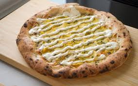
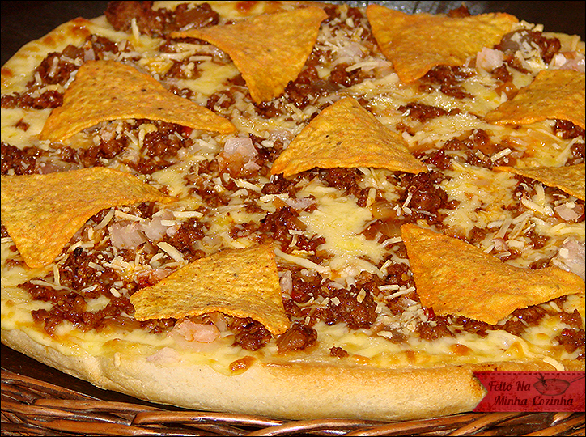
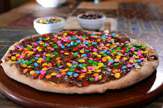
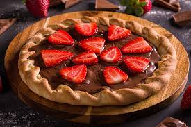

Pizzas em Destaque
Pizzas Salgadas
Pizza Margherita

A clássica pizza Margherita, com molho de tomate fresco, mussarela de búfala, manjericão e um toque de azeite de oliva. Uma explosão de sabores simples e autênticos.
Pizza 4 Queijos

Uma combinação irresistível de queijos: mussarela, gorgonzola, parmesão e provolone, derretidos sobre uma base de molho de tomate. Uma verdadeira indulgência para os amantes de queijo.
Kartoffel
Base cremosa de molho branco, coberta com finas lâminas de batata levemente douradas, cebola caramelizada e generosas camadas de queijo muçarela. Finalizada com toque de alecrim fresco e fio de azeite extra virgem.
Pizza da Casa
Uma combinação única de ingredientes selecionados especialmente para representar a identidade da nossa pizzaria: molho de tomate artesanal, muçarela especial, calabresa levemente apimentada, tiras de pimentão assado, cebola roxa, azeitonas pretas e um toque final de orégano fresco.
Pizzas Doces
Pizza de Confete
Base doce com creme de chocolate ou leite condensado, coberta com uma chuva generosa de confeitos coloridos (tipo M&M's ou similares) que derretem na boca. Finalizada com fios de chocolate e um toque de magia em cada fatia.
Pizza Sensação
Uma sobremesa irresistível para encerrar com chave de ouro! Cobertura de chocolate ao leite derretido sobre massa leve e assada, com morangos frescos cuidadosamente distribuídos. Finalizada com toque de leite condensado ou lascas de chocolate, a depender da versão.